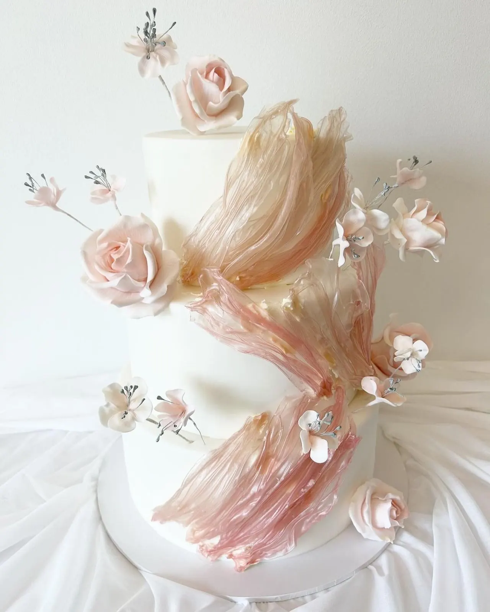
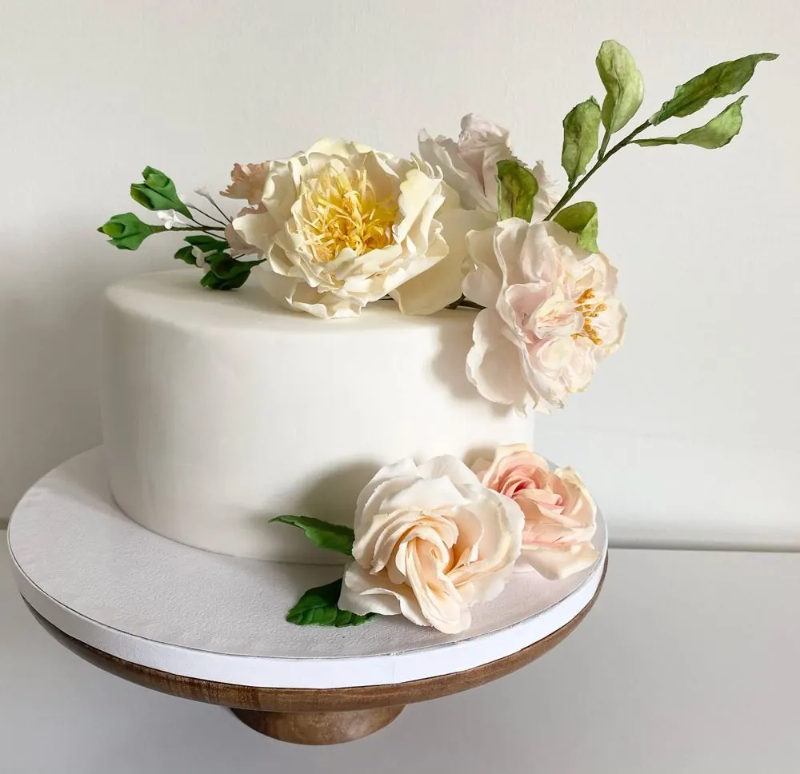
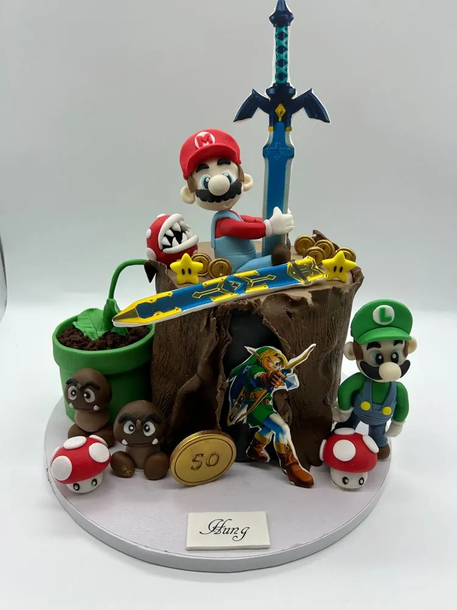
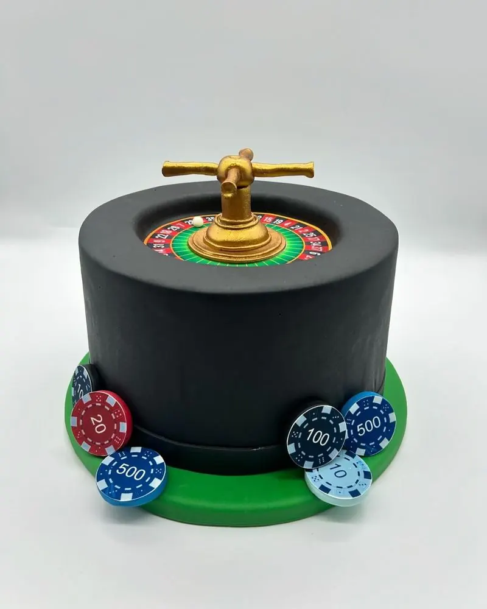
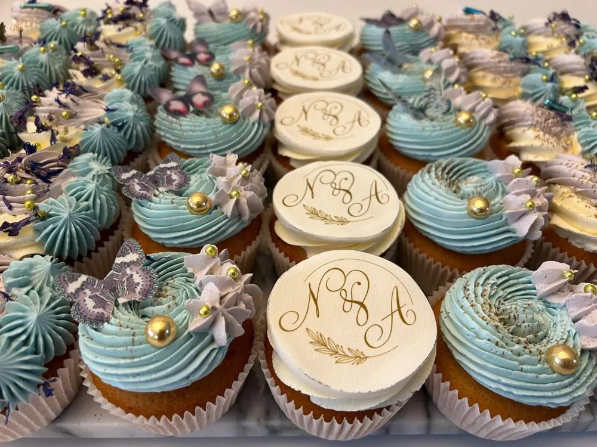
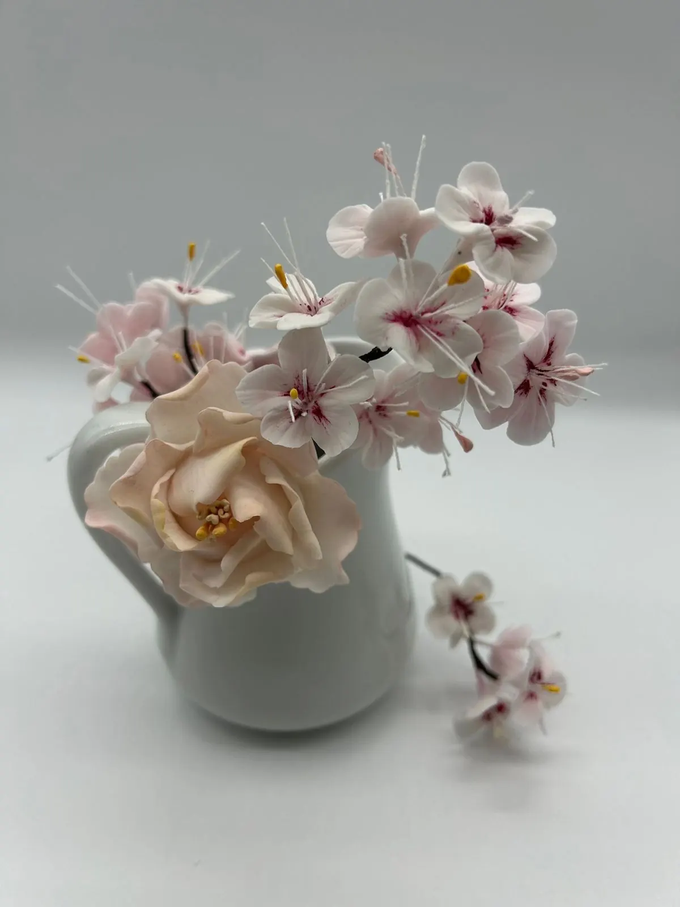

Tårtor på beställning i Malmö och Arlöv
Bröllopstårtor med handgjorda sockerblommor, barntårtor och bakelser. Bakade för hand av Fiona i Arlöv, nära Malmö.
Vad firar ni? Välj och se vad Fiona har gjort.

Från sockerrosor till Super Mario, bakat av samma händer
Fiona är både konditor och sockerblomsdesigner. Samma precision som i en pion av socker går in i en valp i sockerpasta eller en studentmössa.




Vad kostar en tårta?
Alla tårtor kostar 60 kr per bit, med botten och två moussefyllningar. Dekorationen offereras efter hur detaljerad den är, och du får alltid priset innan något är bestämt.
Hej, jag heter Fiona
Jag är konditor, sugarpaste-dekoratör och designer av tårtor och sockerblommor. Jag bakar för barnfamiljen som vill överraska tvååringen och för brudparet som vill ha en romantisk dröm att sätta tårtspaden i.
Vill du ha en enklare tårta går det lika bra. Är du osäker på vilka smaker som passar ihop hjälper jag dig.
Så går en beställning till
Berätta om er dag, så bakar Fiona tårtan
Designtårtor beställs 1-2 veckor i förväg, tårtor med sockerblommor gärna en månad innan. Hämtas i Arlöv, leverans på förfrågan.